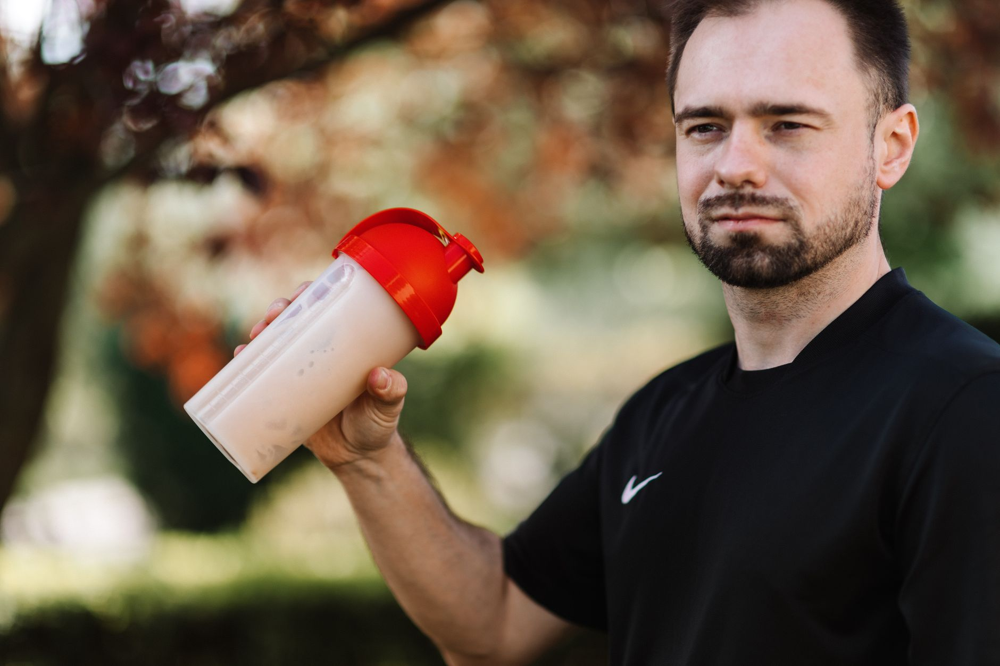

Inicio/Artículos/Suplementos · Mitos virales
Creatina: qué es, para qué sirve y cómo tomarla
7 min de lectura · Actualizado 4 de septiembre de 2026 · Por Miguel Lopez

La creatina se considera uno de los suplementos deportivos más investigados científicamente. Aun así, circulan bastantes mitos sobre ella: que daña los riñones, que afecta distinto a hombres y mujeres, que causa caída de cabello. Este artículo repasa qué es la creatina, para qué sirve según la evidencia y qué dice la ciencia sobre su seguridad, sin entrar en protocolos de consumo.
Qué es la creatina
La creatina es un compuesto que el cuerpo produce de forma natural en el hígado, los riñones y el páncreas. También se obtiene de alimentos proteicos como la carne roja y el pescado. Funciona como una fuente rápida de energía muscular: se convierte en fosfocreatina, que facilita la regeneración de ATP durante el ejercicio intenso.
Para qué sirve realmente
La evidencia muestra que la creatina mejora el rendimiento en ejercicio de fuerza e intensidad, y acelera la recuperación entre series. La investigación indica una ganancia de 1-2 kg de masa muscular adicional en 4-12 semanas cuando se combina con entrenamiento de fuerza regular; el suplemento por sí solo, sin entrenamiento, no produce ese efecto.
Beneficios cognitivos: evidencia emergente
Hay investigación, todavía en desarrollo, principalmente en personas mayores de 60 años y en contextos de privación de sueño, que sugiere mejoras en memoria a corto plazo y razonamiento. Es un área con menos estudios a gran escala que la evidencia sobre rendimiento físico, así que las conclusiones son más preliminares.
Efectos secundarios y seguridad
Los efectos más comunes son retención de agua, hinchazón y, en dosis altas, molestias digestivas ocasionales. El mito de que la creatina daña los riñones en personas sanas no está respaldado por la evidencia científica en población general.
Quién debería consultar a un profesional antes de tomarla
Personas con enfermedad renal o hepática preexistente, diabetes, o que estén embarazadas o en periodo de lactancia deberían consultar con un profesional de salud antes de incorporar creatina, ya que su situación requiere una evaluación individual que este artículo no puede reemplazar.
¿Funciona igual en hombres y mujeres?
Sí, actúa por el mismo mecanismo fisiológico en ambos sexos. El mito de que causa retención de líquidos específicamente en mujeres no está comprobado científicamente.
Mitos frecuentes
- "La creatina daña los riñones": no hay evidencia de esto en personas sanas que consumen dosis estándar.
- "La cafeína anula el efecto de la creatina": es un mito sin respaldo científico actual.
- "La creatina causa calvicie": se basa en un único estudio pequeño, sin evidencia sólida que confirme esa relación.
Conclusión
La creatina es uno de los suplementos con mayor respaldo de investigación en el ámbito deportivo, con beneficios documentados en rendimiento físico y una línea de evidencia emergente en el terreno cognitivo. Su perfil de seguridad en población sana es bueno, aunque ciertos grupos (personas con enfermedad renal o hepática, diabetes, embarazo o lactancia) deberían consultar a un profesional antes de sumarla a su rutina. Este artículo no sustituye esa consulta ni indica cómo debe usarse el suplemento en cada caso particular.
- ¿Qué es la creatina?
- Un compuesto producido naturalmente en el hígado, los riñones y el páncreas, también presente en carnes rojas y pescado. Funciona como fuente rápida de energía muscular.
- ¿Para qué sirve la creatina?
- Mejora el rendimiento en ejercicio de fuerza e intensidad. Se asocia con una ganancia de 1-2 kg de masa muscular en 4-12 semanas cuando se combina con entrenamiento regular.
- ¿Tiene efectos secundarios la creatina?
- Los más comunes son retención de agua, hinchazón y, en dosis altas, molestias digestivas. Se considera relativamente segura en población sana.
- ¿Es mala la creatina para los riñones?
- El mito de que daña los riñones en personas sanas no está respaldado por estudios científicos en población general.
- ¿Sirve la creatina para el cerebro?
- Hay investigación prometedora, sobre todo en mayores de 60 años y en contextos de privación de sueño, sobre memoria y razonamiento, en un área todavía menos madura que la evidencia sobre rendimiento físico.
- ¿Cuál es la forma de creatina con más respaldo científico?
- La creatina monohidratada es la forma más estudiada; otras presentaciones comerciales no han demostrado ser superiores en la evidencia disponible.
- ¿Pueden las mujeres tomar creatina?
- Sí, funciona por el mismo mecanismo que en hombres. El mito de que provoca retención de líquidos en mujeres no está comprobado.
- ¿La cafeína anula el efecto de la creatina?
- Es un mito sin respaldo científico actual.
- ¿La creatina causa calvicie?
- Se basa en un único estudio pequeño; no hay evidencia sólida que confirme esa relación.
- ¿Qué pasa si se deja de tomar creatina?
- Los depósitos musculares vuelven a su nivel basal en algunas semanas, aunque la fuerza y la masa muscular ganadas durante el entrenamiento tienden a persistir.
- ¿Quién debería consultar a un médico antes de tomar creatina?
- Personas con enfermedad renal o hepática preexistente, diabetes, o que estén embarazadas o en periodo de lactancia.
Preguntas frecuentes
Fuentes
Enlaces a la fuente original, para que puedas comprobarlo por tu cuenta.
Miguel Lopez
Periodista independiente, no profesional sanitario. Escribe sobre tendencias de salud y fitness citando siempre las fuentes primarias, para que puedas comprobarlo por tu cuenta. Más sobre el sitio.